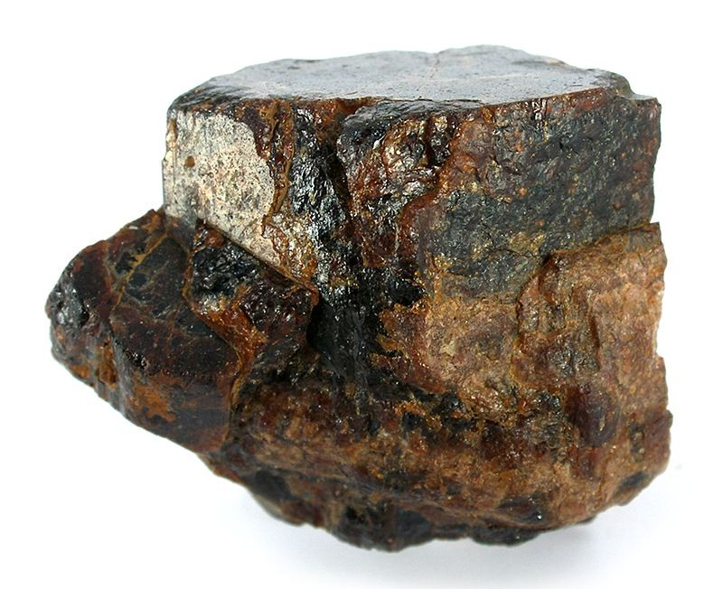

Mobile devices are a core component of a smart society.
The construction of such devices is heavily reliant on Rare Earth Metals. However, most current methods of refining Rare Earth Metals create a lot of polution and environmental problems.
Rare Earth Metals are used in many different components of mobile phones, such as in the display, the glass, the electronics as well as the speaker.
Current extraction of REMs produce off-gas as well as large volumes of acidic waste water, which is difficult to dispose of.
Bastnaesite is a rare earth fluorocarbonate mineral, RE(CO3)F, which primarily contains light rare earth elements. It is the main REM ore extracted in China, and current extraction methods rely on complicated processes with the use of many solvents and reagents.
 SourceBastnaesite ore is processed to create a concentrate containing 40 to 60% REMs. REM fluorides can be extracted today with two main methods: alkaline treatment or sulfuric acid roasting. The alkaline treatment, developed by Kruesi and Duker of Molycorp, is a three step process, using the following reactions. The alkaline treatment is more environmentally friendly as less resources are used to neutralise the sulfuric acid, and reduces the number of steps in the process.
REF3 – RE2(CO3)3 (s) + 6HCl (aq) → REF3 (s) + 2RECl3 (aq) + 3H2O (l) + 3CO2 (g)
REF3 + 3NaOH → RE(OH)3 (s) + 3NaF (aq)
RE(OH)3 + 3HCl → RECl3 (aq) + 3H2O
Milt, or fish semen, contains large amounts of DNA. DNA has many phosphate groups lining its backbone. Rare Earth ions form ligands with the phosphate groups, allowing them to be extracted. Milt is insoluble, ensuring that precipitation occurs easily. Milt is a promising new method as large amounts of it are disposed by the Japanese fishing industry every year. In order to separate the different REMs, a solution of REM ions are passed through a column containing Milt. Due to their differing adsorption capacities, the different REMs can be found at different parts of the column. This process can be repeated to further separate the REMs.
Due to their similar chemical properties, they cannot easily be extracted with reagents. Currently, a cation exchange resin is used to separate the different REMs but this is disadvantageous due to several reasons. Firstly, the resin is volatile, and needs to be replaced frequently. Secondly, it is not biodegradable. Milt is biodegradable, cheap and can be replaced easily.
{kind=link}
{kind=link}